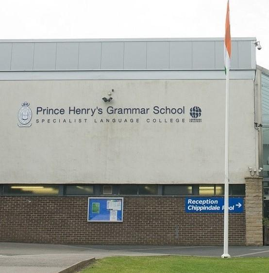
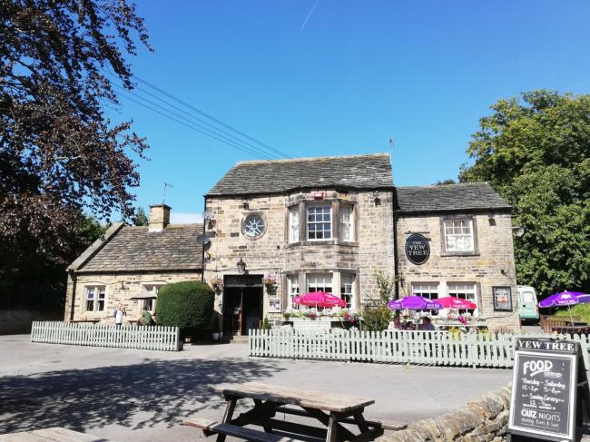

WHO WE ARE
We are a small diving club based in Otley, West Yorkshire. Training takes place Every Tuesday at 8pm at Prince Henry's Grammar School pool, club meetings held Fridays at 8pm at The Yew Tree public house opposite the school.
New members are always welcome


DIVING
Divers of all experience levels welcome. For beginners we offer "try dives" so you can fully discover if diving is for you before committing to full membership.
Full training packages available enabling you to qualify at your own pace. We have monthly dive trips around the UK as well as 3 overseas dive a year
EVENTS
As well as our regular diving excursions there are also plenty of social events throughout the years